billy_joel <- get_artist_audio_features('6zFYqv1mOsgBRQbae3JJ9e')Week 6: Regression and Clustering
Plan for the Week
This week, we will be going over:
- testing some basic hypotheses of continuous data with linear regression
- testing some basic hypotheses of categorical data with logistic regressions
- evaluating model fits
Testing a Hypothesis with Continuous Data
Although we’ve spent a fair bit of time going over the mechanics of the Spotify data, and how to extract information from it, we haven’t spent much time actually discussing testing hypotheses with your data. As many of you are doing hypothesis-based work for your final project, it might be a good time to step back and look some approaches to this.
Hypothesis 1: Do Billy Joel’s Songs Get Slower Over Time?
I think that Billy Joel’s songs are getting slower over time. Let’s test it.
We’ll start by grabbing our data. The spotify API seems to have changed recently, which broke the get_artist_audio_features function in spotifyR. Note how I had to fix it with the less-than-ideal artist URI.
Looking at tempo over time
We can start by eyeballing the data. Here is how we’d do it with base R (no ggplot/tidyverse):
plot(tempo ~ album_release_year, data=billy_joel)
abline(lm(tempo ~ album_release_year, data=billy_joel), col="red")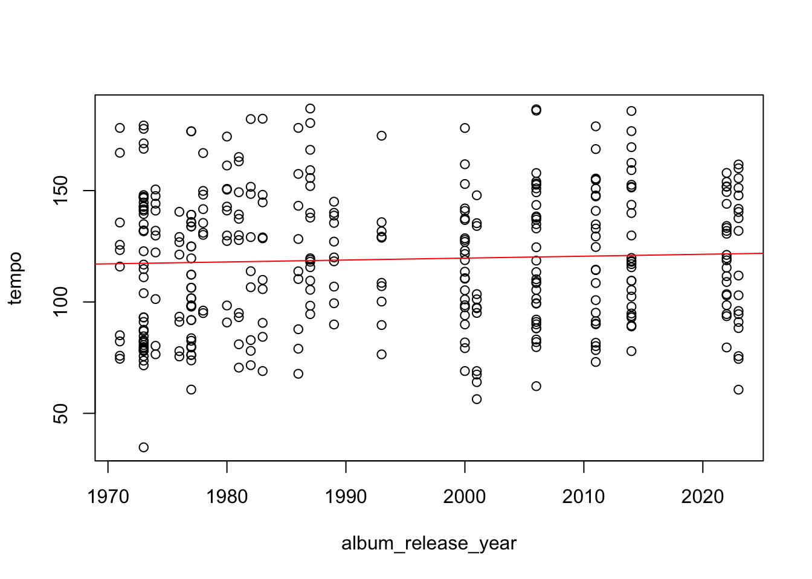
If we’d like to use ggplot it can give us some confidence bars (the default here is a 95% confidence interval):
ggplot(billy_joel, aes(album_release_year, tempo) ) + geom_point() +
stat_smooth(method = lm) +
theme_bw()`geom_smooth()` using formula = 'y ~ x'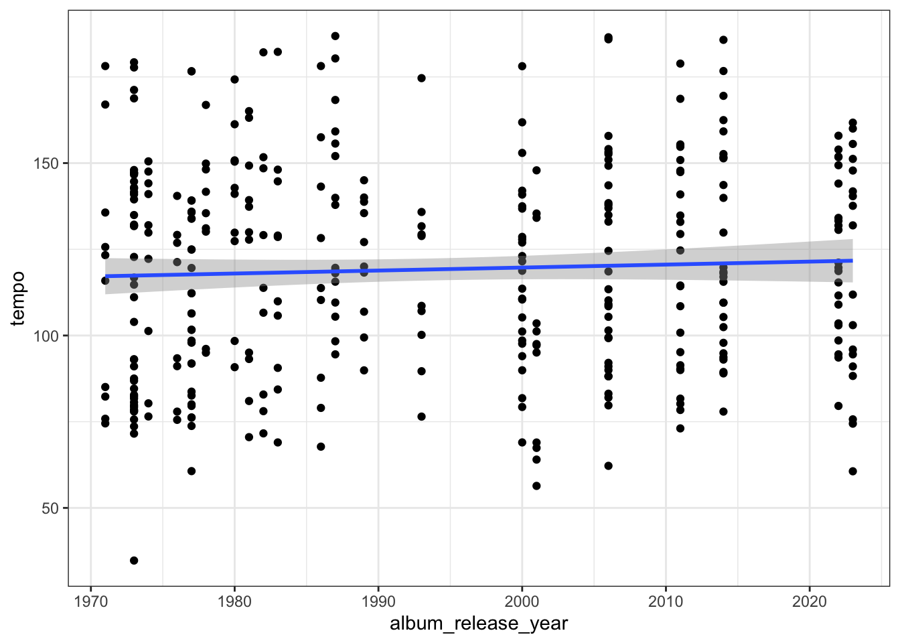
So it looks promising. We can run a linear regression with a simple lm command. Here we can get a summary of the model pretty easily, as well.
summary(lm(tempo ~ album_release_year, data=billy_joel))
Call:
lm(formula = tempo ~ album_release_year, data = billy_joel)
Residuals:
Min 1Q Median 3Q Max
-82.632 -25.836 -0.508 23.329 68.277
Coefficients:
Estimate Std. Error t value Pr(>|t|)
(Intercept) -53.02885 187.12869 -0.283 0.777
album_release_year 0.08637 0.09386 0.920 0.358
Residual standard error: 30.61 on 355 degrees of freedom
Multiple R-squared: 0.002379, Adjusted R-squared: -0.0004309
F-statistic: 0.8467 on 1 and 355 DF, p-value: 0.3581So, as we can see from the results here, it’s not significant (p > .001), but it really doesn’t account for much of the variance (an adjusted R-squared of -.0004).
Post-Hoc Analyses
Perhaps we can look at how other variables might be predictive of the year of the recording.
Let’s look at how tempo, danceability, valence, speechiness, and energy might improve the model.
summary(lm(album_release_year ~ tempo + danceability + valence + speechiness + energy, data=billy_joel))
Call:
lm(formula = album_release_year ~ tempo + danceability + valence +
speechiness + energy, data = billy_joel)
Residuals:
Min 1Q Median 3Q Max
-29.376 -10.790 -0.305 10.294 36.338
Coefficients:
Estimate Std. Error t value Pr(>|t|)
(Intercept) 2002.16180 4.69463 426.479 < 2e-16 ***
tempo -0.02356 0.02566 -0.918 0.359
danceability -37.87836 7.40058 -5.118 5.09e-07 ***
valence -19.21143 4.59097 -4.185 3.61e-05 ***
speechiness 1.47237 5.32909 0.276 0.782
energy 30.68677 3.27153 9.380 < 2e-16 ***
---
Signif. codes: 0 '***' 0.001 '**' 0.01 '*' 0.05 '.' 0.1 ' ' 1
Residual standard error: 14.24 on 351 degrees of freedom
Multiple R-squared: 0.331, Adjusted R-squared: 0.3214
F-statistic: 34.73 on 5 and 351 DF, p-value: < 2.2e-16So we have a more predictive model, with an adjusted R-squared of about .32.
There are some remaining questions, however. Firstly, is there covariance at play?
We can use the variance inflation factor (VIF) to look at this. Typically, each variable should be less than 5.
library(car)Loading required package: carData
Attaching package: 'car'The following object is masked from 'package:dplyr':
recodeThe following object is masked from 'package:purrr':
somebilly_joel_model <- lm(album_release_year ~ tempo + danceability + valence + speechiness + energy, data=billy_joel)
vif(billy_joel_model) tempo danceability valence speechiness energy
1.082621 1.633266 1.950562 1.034647 1.309249 A correlation plot can help us to visualize this a bit more.
library(corrplot)corrplot 0.92 loadedpiano_man <- billy_joel |>
select(c("acousticness", "liveness", "danceability", "loudness", "speechiness", "valence"))
x <- as.matrix(cor(piano_man))
round(x, 2) acousticness liveness danceability loudness speechiness valence
acousticness 1.00 -0.22 -0.25 -0.63 0.14 -0.42
liveness -0.22 1.00 -0.44 0.42 0.03 -0.14
danceability -0.25 -0.44 1.00 0.00 0.06 0.56
loudness -0.63 0.42 0.00 1.00 -0.41 0.31
speechiness 0.14 0.03 0.06 -0.41 1.00 -0.10
valence -0.42 -0.14 0.56 0.31 -0.10 1.00 corrplot(x, method="pie")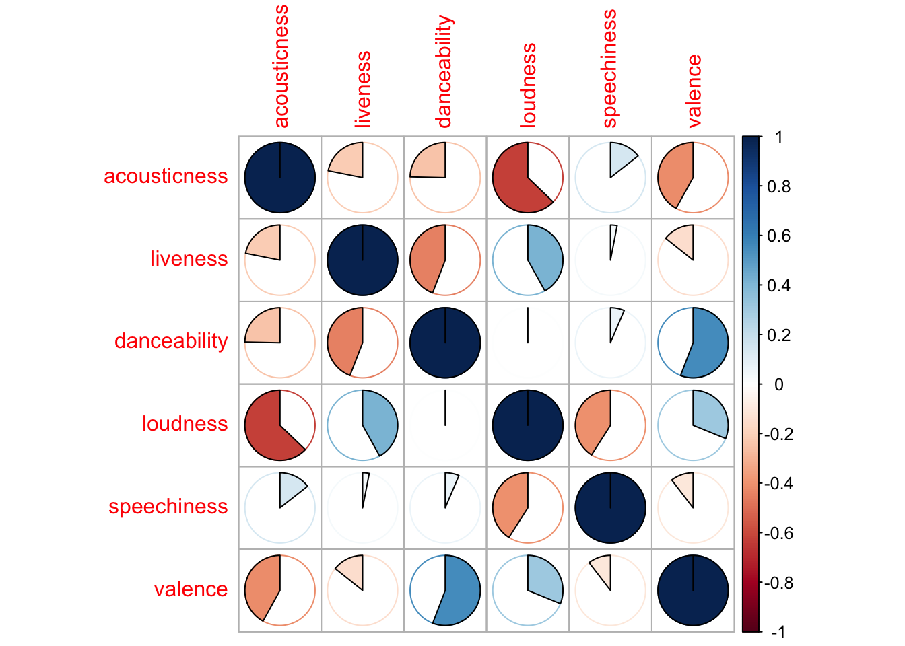
Sidenote: Is/Are the data normal?
We can test to see if the tempo data is normally distributed:
qqnorm(billy_joel$tempo)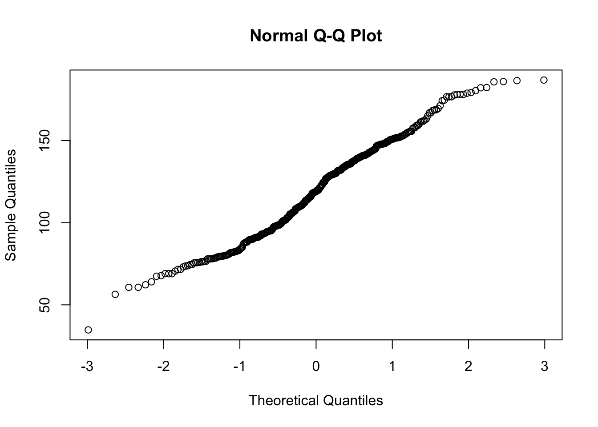
hist(billy_joel$tempo)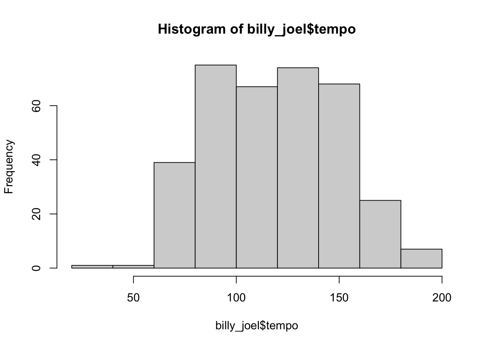
shapiro.test(billy_joel$tempo)
Shapiro-Wilk normality test
data: billy_joel$tempo
W = 0.9806, p-value = 9.793e-05ks.test(billy_joel$tempo, "pnorm")Warning in ks.test.default(billy_joel$tempo, "pnorm"): ties should not be
present for the Kolmogorov-Smirnov test
Asymptotic one-sample Kolmogorov-Smirnov test
data: billy_joel$tempo
D = 1, p-value < 2.2e-16
alternative hypothesis: two-sidedAt the moment, it doesn’t seem to be…
Stepwise Entry Regression
summary(step(lm(album_release_year ~ danceability +
tempo + acousticness +
speechiness + valence, data=billy_joel),
direction="backward"))Start: AIC=1934.73
album_release_year ~ danceability + tempo + acousticness + speechiness +
valence
Df Sum of Sq RSS AIC
- tempo 1 65.0 77993 1933.0
- speechiness 1 167.7 78095 1933.5
<none> 77928 1934.7
- valence 1 1100.7 79028 1937.7
- acousticness 1 11065.4 88993 1980.1
- danceability 1 12221.7 90149 1984.7
Step: AIC=1933.03
album_release_year ~ danceability + acousticness + speechiness +
valence
Df Sum of Sq RSS AIC
- speechiness 1 170.5 78163 1931.8
<none> 77993 1933.0
- valence 1 1239.9 79233 1936.7
- acousticness 1 11006.3 88999 1978.2
- danceability 1 12412.6 90405 1983.8
Step: AIC=1931.81
album_release_year ~ danceability + acousticness + valence
Df Sum of Sq RSS AIC
<none> 78163 1931.8
- valence 1 1372.5 79536 1936.0
- acousticness 1 10836.8 89000 1976.2
- danceability 1 12256.3 90419 1981.8
Call:
lm(formula = album_release_year ~ danceability + acousticness +
valence, data = billy_joel)
Residuals:
Min 1Q Median 3Q Max
-30.038 -12.131 -1.921 11.315 37.401
Coefficients:
Estimate Std. Error t value Pr(>|t|)
(Intercept) 2031.308 3.449 588.878 < 2e-16 ***
danceability -54.265 7.294 -7.440 7.74e-13 ***
acousticness -19.751 2.823 -6.996 1.33e-11 ***
valence -11.006 4.421 -2.490 0.0132 *
---
Signif. codes: 0 '***' 0.001 '**' 0.01 '*' 0.05 '.' 0.1 ' ' 1
Residual standard error: 14.88 on 353 degrees of freedom
Multiple R-squared: 0.2651, Adjusted R-squared: 0.2588
F-statistic: 42.44 on 3 and 353 DF, p-value: < 2.2e-16summary(step(lm(album_release_year ~ danceability +
tempo + acousticness +
speechiness + valence, data=billy_joel),
direction="forward"))Start: AIC=1934.73
album_release_year ~ danceability + tempo + acousticness + speechiness +
valence
Call:
lm(formula = album_release_year ~ danceability + tempo + acousticness +
speechiness + valence, data = billy_joel)
Residuals:
Min 1Q Median 3Q Max
-29.57 -12.43 -1.62 11.50 37.91
Coefficients:
Estimate Std. Error t value Pr(>|t|)
(Intercept) 2033.1925 5.0614 401.707 < 2e-16 ***
danceability -56.1173 7.5635 -7.419 8.94e-13 ***
tempo -0.0145 0.0268 -0.541 0.5887
acousticness -20.1919 2.8601 -7.060 8.98e-12 ***
speechiness 4.8770 5.6116 0.869 0.3854
valence -10.0944 4.5335 -2.227 0.0266 *
---
Signif. codes: 0 '***' 0.001 '**' 0.01 '*' 0.05 '.' 0.1 ' ' 1
Residual standard error: 14.9 on 351 degrees of freedom
Multiple R-squared: 0.2673, Adjusted R-squared: 0.2569
F-statistic: 25.61 on 5 and 351 DF, p-value: < 2.2e-16Comparing Fits:
We could construct a few models But how can we tell which of these is more predictable? For this, we can look at Akaike’s ‘An Information Criterion’(or AIC). The lower number is better, and any difference of more than 2 is considered a statistically significant difference fit.
dance_model <- lm(danceability ~ album_release_year, data=billy_joel)
acoustic_model <- lm(acousticness ~ album_release_year, data=billy_joel)
speech_model <- lm(speechiness ~ album_release_year, data=billy_joel)
valence_model <- lm(valence ~ album_release_year, data=billy_joel)
tempo_model <- lm(tempo ~ album_release_year, data=billy_joel)
combined_model <- lm(album_release_year ~ tempo + acousticness + speechiness + valence, data=billy_joel)
AIC(dance_model,
acoustic_model,
tempo_model,
speech_model,
valence_model,
combined_model) df AIC
dance_model 3 -500.47993
acoustic_model 3 163.75641
tempo_model 3 3459.95593
speech_model 3 -365.56978
valence_model 3 -51.44052
combined_model 6 2999.86297The combined model doesn’t seem to do terribly well here, which seems to muddy the question up a bit. There are some interesting points here with tempo, valence, acoustic, and speech, though.
Is a linear model the best approach?
We can adjust how we are viewing this data (linear or polynomial fit) a bit with the code below. Here we can plot our data as a line:
ggplot(billy_joel, aes(album_release_year, tempo) ) + geom_point() +
stat_smooth(method = lm, formula = y ~ poly(x, 1, raw = TRUE)) +
theme_bw()
And here we have it as a second order polynomial:
ggplot(billy_joel, aes(album_release_year, tempo) ) + geom_point() +
stat_smooth(method = lm, formula = y ~ poly(x, 2, raw = TRUE)) +
theme_bw()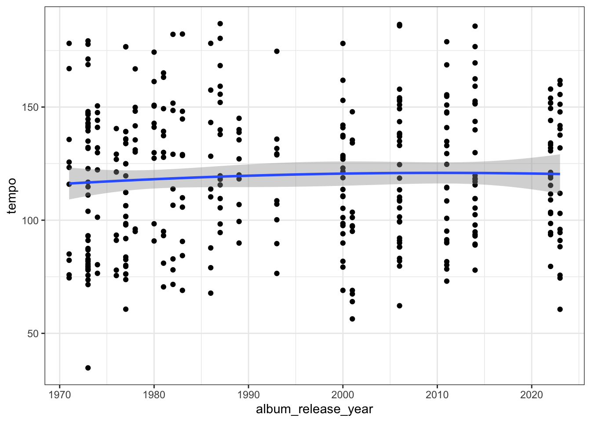
And we can compare fits here:
linear <- lm(album_release_year ~ tempo, data = billy_joel)
poly_2 <- lm(album_release_year ~ tempo + I(album_release_year^2), data = billy_joel)
AIC(linear,
poly_2) df AIC
linear 3 3052.039
poly_2 4 -1041.695So it looks like a polynomial fit is a better one, but still isn’t that great.
Predicting a categorical variable
What does it look like to predict a categorical variable in R? We might explore this question by hypothesizing that musical features might be predictive of mode (labeled in Spotify as major or minor: 1 or 0).
Here is what a binomial logistic regression would look like:
billy_joel.log <- glm(mode ~ tempo + danceability + valence +
speechiness + acousticness, family = binomial, data = billy_joel)And it looks like “speechiness” is the most predictive of mode here.
summary(billy_joel.log)
Call:
glm(formula = mode ~ tempo + danceability + valence + speechiness +
acousticness, family = binomial, data = billy_joel)
Deviance Residuals:
Min 1Q Median 3Q Max
-2.4202 0.3895 0.4728 0.5709 1.0682
Coefficients:
Estimate Std. Error z value Pr(>|z|)
(Intercept) 4.413208 1.060553 4.161 3.17e-05 ***
tempo -0.006563 0.005367 -1.223 0.2214
danceability -3.572894 1.499965 -2.382 0.0172 *
valence 1.175420 0.882904 1.331 0.1831
speechiness -0.596981 0.877367 -0.680 0.4962
acousticness -1.336813 0.563678 -2.372 0.0177 *
---
Signif. codes: 0 '***' 0.001 '**' 0.01 '*' 0.05 '.' 0.1 ' ' 1
(Dispersion parameter for binomial family taken to be 1)
Null deviance: 289.22 on 356 degrees of freedom
Residual deviance: 274.08 on 351 degrees of freedom
AIC: 286.08
Number of Fisher Scoring iterations: 5We can plot the log odds ratios as well:
CI <- exp(confint(billy_joel.log))[-1,]Waiting for profiling to be done...sjPlot::plot_model(billy_joel.log,
axis.lim = c(min(CI), max(CI)),
auto.label = F,
show.values = T) +
theme_bw()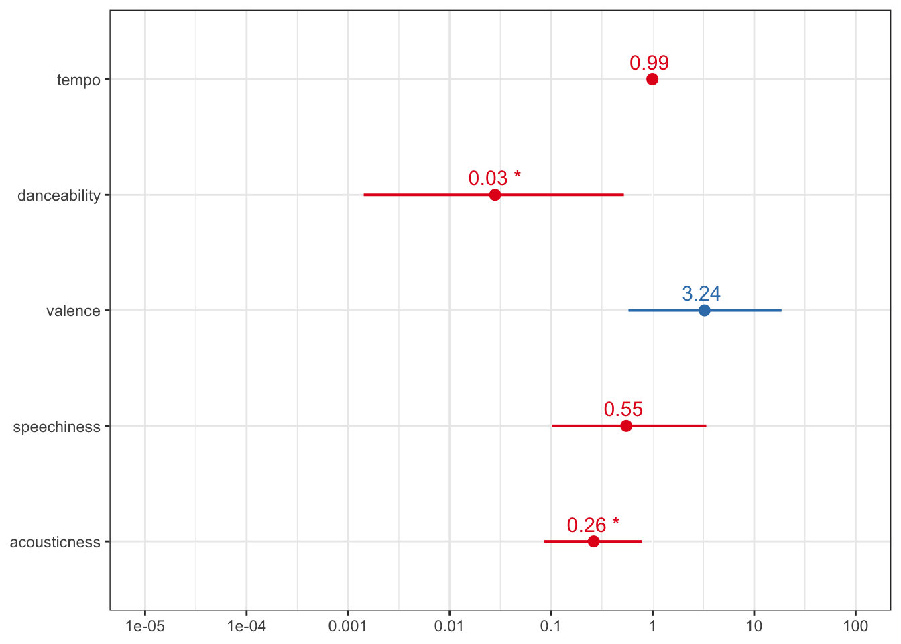
Wednesday
Clustering
Cluster analysis is a form of statistical data analysis in which subsets (called “clusters”) are formed according to some notion of similarity. There are many different variants of cluster analysis, but most are hierarchical–in which low-level clusters are successively joined together to make larger clusters, and so on, until everything is clustered into one large group. The result is a cluster tree or dendrogram.
How does the R hclust function work?
The hclust function is part of the default package in R, and it clusters based on dissimilarities in the data. There are different algorithms it can use, but the default is Ward’s minimum variance. It requires some distance to be calculated first, so the dist function is used on the data. Again there are many options here, but the default is to simply calculate the Euclidean distance between the values.
The documentation states:
This function performs a hierarchical cluster analysis using a set of dissimilarities for the n objects being clustered. Initially, each object is assigned to its own cluster and then the algorithm proceeds iteratively, at each stage joining the two most similar clusters, continuing until there is just a single cluster. At each stage distances between clusters are recomputed by the Lance–Williams dissimilarity update formula according to the particular clustering method being used.
The default is Ward’s minimum variance method, which:
aims at finding compact, spherical clusters. The complete linkage method finds similar clusters.
Another method is the “single linkage method”.
The single linkage method (which is closely related to the minimal spanning tree) adopts a ‘friends of friends’ clustering strategy. The other methods can be regarded as aiming for clusters with characteristics somewhere between the single and complete link methods. Note however, that methods “median” and “centroid” are not leading to a monotone distance measure, or equivalently the resulting dendrograms can have so called inversions or reversals which are hard to interpret, but note the trichotomies in Legendre and Legendre (2012).
# cluster demo modified from here:
### https://www.r-bloggers.com/2021/04/cluster-analysis-in-r/
library(tidyverse)
library(cluster)
beyonce <- read.csv("../data/beyonce.csv")
taylor <- read.csv("../data/taylor.csv")
df <- beyonce |>
filter(album_name == "4") |>
select(c("track_name", "acousticness", "liveness", "danceability", "loudness", "speechiness", "valence"))df <- df |> distinct(track_name, .keep_all = TRUE)
## cleaning up the data.
z <- df[,-c(1,1)]
### getting means of each category.
means <- apply(z,2,mean)
### getting standard deviation of each category.
sds <- apply(z,2,sd)
### scales the data in the matrix.
scaled_data <- scale(z,center=means,scale=sds)
distance <- dist(scaled_data)And we can plot the data like this:
### helps with the size of the image.
par(mar = c(5, 4, 4, 1))
### creates the cluster
df.hclust <- hclust(distance)
### plots the data but with row numbers.
plot(df.hclust)
And we can add the track name like so:
plot(df.hclust,labels=df$track_name,main='Default from hclust')
We can clean up the plot the be along a single x-axis with the hang argument.
nodePar <- list(lab.cex = 0.6, pch = c(NA, 19),
cex = 0.7, col = "blue")
plot(df.hclust,hang=-1, labels=df$track_name,main='Default from hclust')
Which track belongs to which cluster?
It might be helpful with this analysis to look at how each of the songs fits on the tree. We can use the cutree function, which “cuts a tree” from the cluster based on how many groups we ask it for.
The following code can tell us how many fall into each broader tree, assuming we think that the tree should be cut into three. Notice that the third branch is the most populous, with the second being the most sparsely populated.
member <- cutree(df.hclust,3)
table(member)member
1 2 3
4 3 11 But how is each category being weighted? The code below shows that acousticness and danceability do a fair bit of work in separating groups 1 and 3, and valence separates 1 and 2 from one another.
##but how are these clusters calculated?
aggregate(scaled_data,list(member),mean) Group.1 acousticness liveness danceability loudness speechiness
1 1 1.2293770 -0.3037203 -1.5341655 -0.4289046 0.3971934
2 2 0.6165508 -0.5097641 0.5152708 -1.0002027 1.0862774
3 3 -0.6151964 0.2494703 0.4173500 0.4287478 -0.4406914
valence
1 -1.2506018
2 1.0310423
3 0.1735709A slightly more even split occurs if we break it into four groups rather than three.
member <- cutree(df.hclust,4)
table(member)member
1 2 3 4
4 3 9 2 And that how they’re split into four is a bit different from how we might split them into three, but danceability and acousticness still playing a strong role.
aggregate(scaled_data,list(member),mean) Group.1 acousticness liveness danceability loudness speechiness
1 1 1.2293770 -0.3037203 -1.5341655 -0.4289046 0.3971934
2 2 0.6165508 -0.5097641 0.5152708 -1.0002027 1.0862774
3 3 -0.6115250 -0.1547202 0.4044253 0.3613888 -0.5628163
4 4 -0.6317177 2.0683279 0.4755110 0.7318636 0.1088705
valence
1 -1.25060184
2 1.03104230
3 0.05196371
4 0.72080353K-Means Clustering
We can also run a simple k-means clustering on the data. With this, we are clustering the data into k groups. R’s documentation explains it like so:
aims to partition the points into k groups such that the sum of squares from points to the assigned cluster centres is minimized. At the minimum, all cluster centres are at the mean of their Voronoi sets (the set of data points which are nearest to the cluster centre).
There are a few algorithms to pick from. R uses the Hartigan and Wong (1979) algorithm by default.
###split it into three groups
set.seed(123)
kc <- kmeans(scaled_data,3)
### add labels.
row.names(scaled_data) <- df$track_name
###get the shortest distance.
datadistshortset<-dist(scaled_data,method = "euclidean")The code below will cluster it based on this k-means clustering distance, and plot them into the amount of groups listed (here 3).
hc1 <- hclust(datadistshortset, method = "complete" )
pamvshortset <- pam(datadistshortset,3, diss = FALSE)
clusplot(pamvshortset, shade = FALSE,labels=2,col.clus="blue",col.p="red",span=FALSE,main="Cluster Mapping",cex=1.2)
Example 1: Looking at Nirvana’s Unplugged in New York
I’m going to get the global features from Nirvana’s Unplugged in New York album:
# Get the album tracks
album_id <- "1To7kv722A8SpZF789MZy7" # This is the Spotify ID for "MTV Unplugged In New York"
##get all the tracks.
album_tracks <- get_album_tracks(album_id)
# Get all of the audo features.
audio_features <- get_track_audio_features(album_tracks$id)
# combine the tracks with the features.
nirvana_unplugged <- left_join(album_tracks, audio_features, by = "id")This gets lots of data, and I’m just interested in their global measures (tempo, danceability, liveness, etc.). Here, I’ve gone with column number rather than name, but the other version might be a bit easier/cleaner. Nevertheless, this is another way of doing it:
### This subsets the data based on only the columns I want.
nirvana_unplugged_data <- nirvana_unplugged |>
select(danceability, energy, loudness, speechiness, tempo, valence, acousticness, instrumentalness, energy)
### I assign the track name column (30) with the rownames, to have a labeled cluster.
rownames(nirvana_unplugged_data) <- nirvana_unplugged$namehc <- hclust(dist(nirvana_unplugged_data), method = "complete", members = NULL)
plot(hc)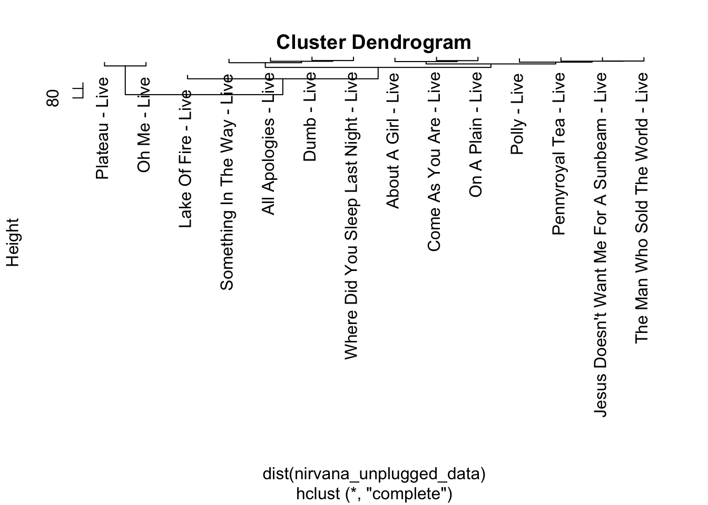
Plotting the cluster
Technically, you could just use the plot function at this point, but there are some long title names, so I added these extra plot options to make the text smaller and increase the marins.
par(cex=0.5, mar=c(5, 8, 4, 1))
plot(hc, labels = row.names(nirvana_unplugged_data),xlab="", ylab="", main="", sub="", axes=FALSE)
par(cex=1)
title(xlab="tunes", ylab="height", main="Nirvana unplugged")
axis(2)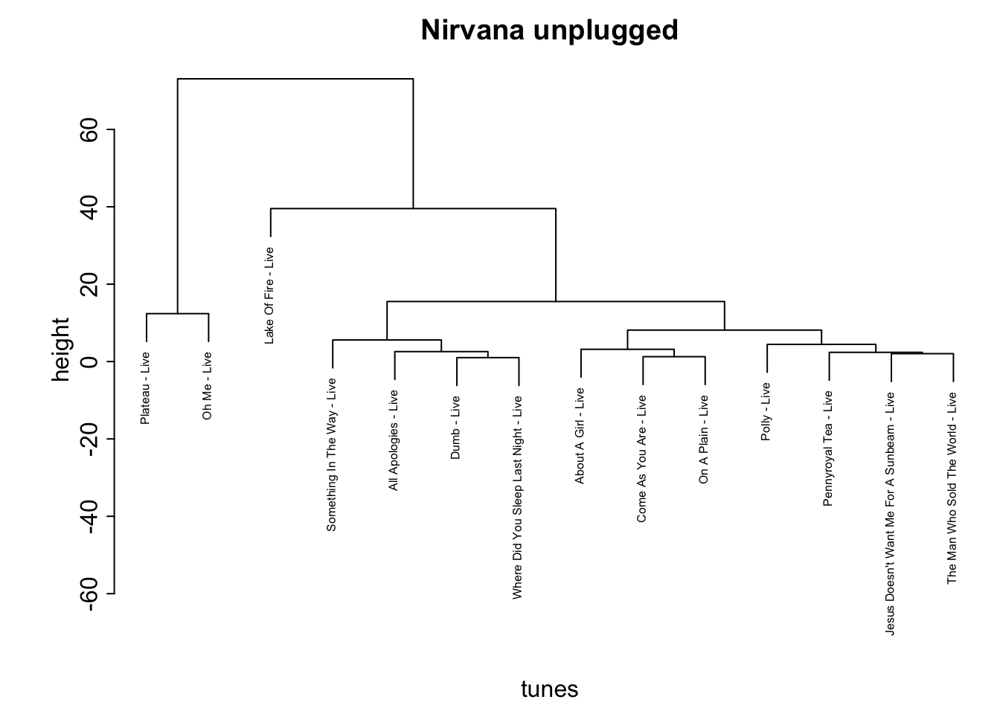
This plot is a bit strange now, as we have a pretty big negative number on the y-axis. Nevertheless, we see some cool things. The songs written by the Meat Puppets cluster together, for example.
k-means clustering
Our next type of clustering analysis is be a k-means cluster. We will start off by using a scree plot to see how many clusters we should use. There are a number of ways of analyzing where an “elbow” on this plot might be, but many people actually just eyeball it.
titles <- nirvana_unplugged$name
nirvana_unplugged_data <- scale(nirvana_unplugged_data[,-10]) # standardize variables
nirvana_unplugged_data <- as.data.frame(nirvana_unplugged_data) # standardize variables# Determine number of clusters
wss <- (nrow(nirvana_unplugged_data)-1)*sum(apply(nirvana_unplugged_data,2,var))
for (i in 1:8) wss[i] <- sum(kmeans(nirvana_unplugged_data,
centers=i)$withinss)
plot(1:8, wss, type="b", xlab="Number of Clusters",
ylab="Within groups sum of squares")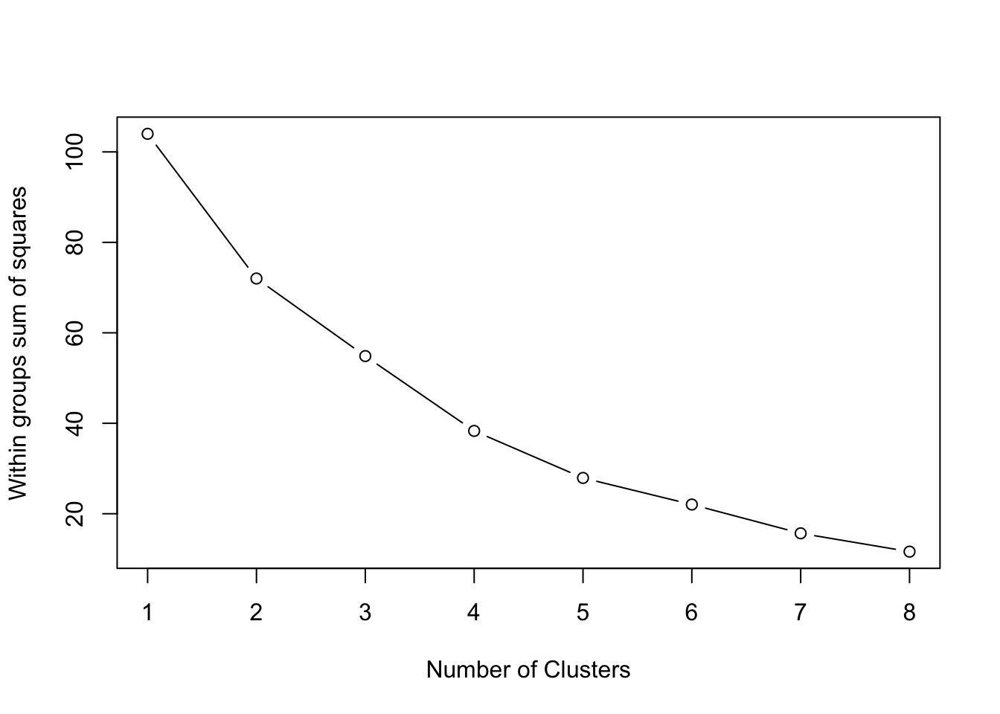
And now we can look at the k-means clustering based on however many clusters we think are necessary.
# K-Means Cluster Analysis
fit <- kmeans(nirvana_unplugged_data, 3) # 3 cluster solution
# get cluster means
aggregate(nirvana_unplugged_data,by=list(fit$cluster),FUN=mean) Group.1 danceability energy loudness speechiness tempo valence
1 1 -0.5625808 0.4212425 0.5351353 0.5578725 0.6479399 -0.04483405
2 2 -0.7610397 -0.9842223 -1.5210813 0.1617592 -1.3717591 -0.91001724
3 3 0.8493372 0.1410757 0.3145946 -0.5457733 0.1459297 0.49237033
acousticness instrumentalness
1 -1.0817044 -0.3337712
2 0.7858082 0.9230788
3 0.5085162 -0.1833967# append cluster assignment
unplugged_appended <- data.frame(nirvana_unplugged_data, fit$cluster)rownames(unplugged_appended) = titles
clusplot(unplugged_appended, fit$cluster, color=TRUE, shade=TRUE,
labels=3, lines=0)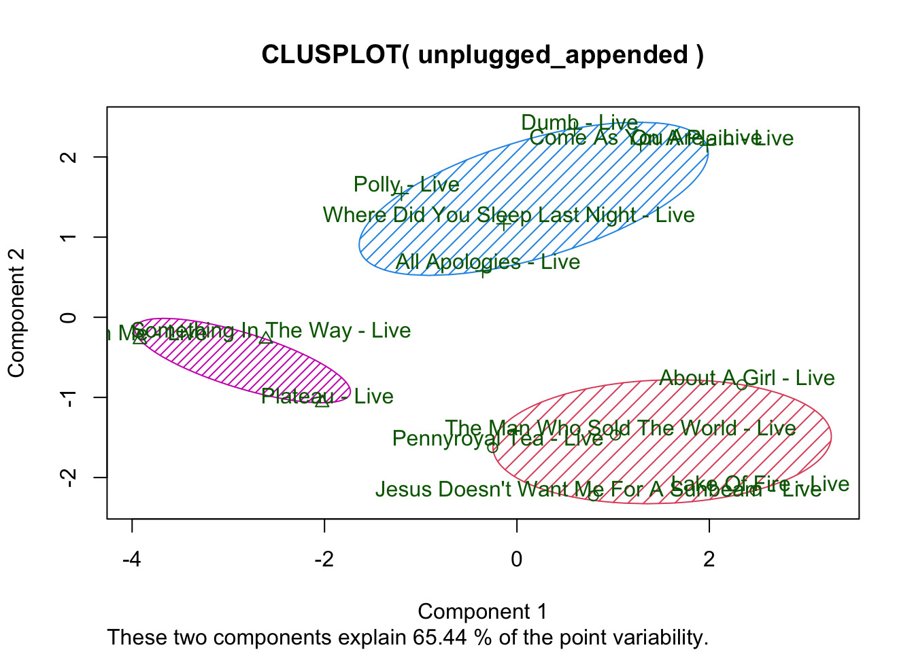
Conditional Inference Tree with Party
A conditional inference tree is basically a regression tree, and it tells you exactly how it picks apart the data in a pretty clear way.
I’ve always thought that Weezer was a bit derivative, so we might look at how we can separate them other (much better) bands, like Pavement…
###gets around the spotify API limitations of 100.
split_into_chunks <- function(track_ids, chunk_size = 100) {
split(track_ids, ceiling(seq_along(track_ids) / chunk_size))
}
###gets tracks from pavement and weezer albums, and all of their features.
pavement_albums <- get_artist_albums('3inCNiUr4R6XQ3W43s9Aqi')
pavement_tracks <- map_df(pavement_albums$id, get_album_tracks)
weezer_albums <- get_artist_albums('3jOstUTkEu2JkjvRdBA5Gu')
weezer_tracks <- map_df(weezer_albums$id, get_album_tracks)##splits into chunks and gets the audio data for weezer
weezer_track_id_chunks <- split_into_chunks(weezer_tracks$id)
weezer_audio_features_list <- lapply(weezer_track_id_chunks, get_track_audio_features)
##splits into chunks and gets the audio data for pavement
pavement_track_id_chunks <- split_into_chunks(pavement_tracks$id)
pavement_audio_features_list <- lapply(pavement_track_id_chunks, get_track_audio_features)# Combine the list of data frames into a single data frame for both artists
weezer_audio_features <- do.call(rbind, weezer_audio_features_list)
pavement_audio_features <- do.call(rbind, pavement_audio_features_list)
weezer_data <- left_join(weezer_tracks, weezer_audio_features, by = "id")
pavement_data <- left_join(pavement_tracks, pavement_audio_features, by = "id")
pavement_data$artist <- "Pavement"
weezer_data$artist <- "Weezer"
pavement <- pavement_data |> select(artist, danceability, energy, key, loudness, speechiness, acousticness, instrumentalness, liveness, valence, tempo)
weezer <- weezer_data |> select(artist, danceability, energy, key, loudness, speechiness, acousticness, instrumentalness, liveness, valence, tempo)
pavement_weezer <-rbind(pavement, weezer)
pavement_weezer <- as.data.frame(pavement_weezer)Here’s a regression tree that tries to account for the variance between deciding whether a piece is from Pavement or Weezer.
library(rpart.plot)Loading required package: rpart# grow tree
fit <- rpart(as.factor(artist) ~ danceability +
valence + tempo + liveness, data=pavement_weezer)
printcp(fit) # display the results
Classification tree:
rpart(formula = as.factor(artist) ~ danceability + valence +
tempo + liveness, data = pavement_weezer)
Variables actually used in tree construction:
[1] danceability liveness tempo valence
Root node error: 245/523 = 0.46845
n= 523
CP nsplit rel error xerror xstd
1 0.293878 0 1.00000 1.00000 0.046579
2 0.020408 1 0.70612 0.79184 0.045090
3 0.016327 4 0.64490 0.78776 0.045042
4 0.012245 5 0.62857 0.77143 0.044842
5 0.011224 6 0.61633 0.76735 0.044790
6 0.010204 15 0.48980 0.76327 0.044738
7 0.010000 17 0.46939 0.76327 0.044738plotcp(fit) # visualize cross-validation results 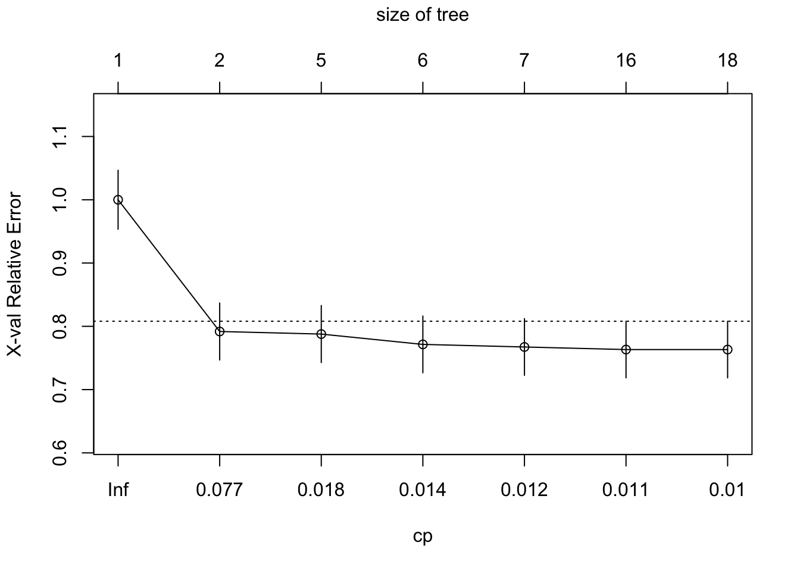
summary(fit) # detailed summary of splitsCall:
rpart(formula = as.factor(artist) ~ danceability + valence +
tempo + liveness, data = pavement_weezer)
n= 523
CP nsplit rel error xerror xstd
1 0.29387755 0 1.0000000 1.0000000 0.04657882
2 0.02040816 1 0.7061224 0.7918367 0.04509017
3 0.01632653 4 0.6448980 0.7877551 0.04504211
4 0.01224490 5 0.6285714 0.7714286 0.04484223
5 0.01122449 6 0.6163265 0.7673469 0.04479034
6 0.01020408 15 0.4897959 0.7632653 0.04473769
7 0.01000000 17 0.4693878 0.7632653 0.04473769
Variable importance
danceability valence tempo liveness
41 24 24 11
Node number 1: 523 observations, complexity param=0.2938776
predicted class=Pavement expected loss=0.4684512 P(node) =1
class counts: 278 245
probabilities: 0.532 0.468
left son=2 (277 obs) right son=3 (246 obs)
Primary splits:
danceability < 0.4725 to the left, improve=29.396200, (0 missing)
valence < 0.192 to the left, improve= 6.770815, (0 missing)
liveness < 0.0561 to the right, improve= 5.761035, (0 missing)
tempo < 176.162 to the right, improve= 4.760761, (0 missing)
Surrogate splits:
valence < 0.518 to the left, agree=0.639, adj=0.232, (0 split)
tempo < 136.195 to the right, agree=0.606, adj=0.163, (0 split)
liveness < 0.0561 to the right, agree=0.541, adj=0.024, (0 split)
Node number 2: 277 observations, complexity param=0.01122449
predicted class=Pavement expected loss=0.3104693 P(node) =0.5296367
class counts: 191 86
probabilities: 0.690 0.310
left son=4 (23 obs) right son=5 (254 obs)
Primary splits:
liveness < 0.587 to the right, improve=4.835498, (0 missing)
tempo < 125.6825 to the left, improve=4.819101, (0 missing)
danceability < 0.4165 to the left, improve=4.241499, (0 missing)
valence < 0.4625 to the right, improve=3.065208, (0 missing)
Surrogate splits:
valence < 0.03735 to the left, agree=0.921, adj=0.043, (0 split)
Node number 3: 246 observations, complexity param=0.02040816
predicted class=Weezer expected loss=0.3536585 P(node) =0.4703633
class counts: 87 159
probabilities: 0.354 0.646
left son=6 (50 obs) right son=7 (196 obs)
Primary splits:
valence < 0.3135 to the left, improve=4.358109, (0 missing)
danceability < 0.522 to the left, improve=3.398899, (0 missing)
tempo < 142.4715 to the right, improve=3.377442, (0 missing)
liveness < 0.0704 to the right, improve=3.155722, (0 missing)
Surrogate splits:
danceability < 0.4755 to the left, agree=0.805, adj=0.04, (0 split)
Node number 4: 23 observations
predicted class=Pavement expected loss=0 P(node) =0.04397706
class counts: 23 0
probabilities: 1.000 0.000
Node number 5: 254 observations, complexity param=0.01122449
predicted class=Pavement expected loss=0.3385827 P(node) =0.4856597
class counts: 168 86
probabilities: 0.661 0.339
left son=10 (92 obs) right son=11 (162 obs)
Primary splits:
valence < 0.4625 to the right, improve=4.237209, (0 missing)
tempo < 125.6825 to the left, improve=4.031567, (0 missing)
danceability < 0.4165 to the left, improve=3.555460, (0 missing)
liveness < 0.439 to the left, improve=2.039126, (0 missing)
Surrogate splits:
liveness < 0.0786 to the left, agree=0.689, adj=0.141, (0 split)
danceability < 0.4325 to the right, agree=0.673, adj=0.098, (0 split)
tempo < 117.162 to the left, agree=0.650, adj=0.033, (0 split)
Node number 6: 50 observations, complexity param=0.02040816
predicted class=Pavement expected loss=0.46 P(node) =0.09560229
class counts: 27 23
probabilities: 0.540 0.460
left son=12 (16 obs) right son=13 (34 obs)
Primary splits:
valence < 0.279 to the right, improve=3.494412, (0 missing)
liveness < 0.117 to the left, improve=3.494412, (0 missing)
danceability < 0.545 to the left, improve=1.883478, (0 missing)
tempo < 122.7905 to the left, improve=1.830476, (0 missing)
Surrogate splits:
tempo < 99.264 to the left, agree=0.72, adj=0.125, (0 split)
liveness < 0.483 to the right, agree=0.72, adj=0.125, (0 split)
Node number 7: 196 observations, complexity param=0.01632653
predicted class=Weezer expected loss=0.3061224 P(node) =0.374761
class counts: 60 136
probabilities: 0.306 0.694
left son=14 (18 obs) right son=15 (178 obs)
Primary splits:
tempo < 145.2105 to the right, improve=3.687279, (0 missing)
liveness < 0.3925 to the left, improve=2.922124, (0 missing)
danceability < 0.7155 to the right, improve=2.805638, (0 missing)
valence < 0.6665 to the right, improve=1.559213, (0 missing)
Node number 10: 92 observations, complexity param=0.01122449
predicted class=Pavement expected loss=0.2173913 P(node) =0.1759082
class counts: 72 20
probabilities: 0.783 0.217
left son=20 (83 obs) right son=21 (9 obs)
Primary splits:
tempo < 86.273 to the right, improve=4.027239, (0 missing)
danceability < 0.431 to the left, improve=3.786206, (0 missing)
liveness < 0.1395 to the right, improve=1.890015, (0 missing)
valence < 0.4995 to the left, improve=1.304348, (0 missing)
Node number 11: 162 observations, complexity param=0.01122449
predicted class=Pavement expected loss=0.4074074 P(node) =0.3097514
class counts: 96 66
probabilities: 0.593 0.407
left son=22 (53 obs) right son=23 (109 obs)
Primary splits:
valence < 0.192 to the left, improve=5.160772, (0 missing)
danceability < 0.405 to the left, improve=3.367937, (0 missing)
liveness < 0.097 to the left, improve=2.840319, (0 missing)
tempo < 77.903 to the left, improve=2.793651, (0 missing)
Surrogate splits:
danceability < 0.2145 to the left, agree=0.722, adj=0.151, (0 split)
tempo < 77.0425 to the left, agree=0.704, adj=0.094, (0 split)
Node number 12: 16 observations
predicted class=Pavement expected loss=0.1875 P(node) =0.03059273
class counts: 13 3
probabilities: 0.813 0.187
Node number 13: 34 observations, complexity param=0.02040816
predicted class=Weezer expected loss=0.4117647 P(node) =0.06500956
class counts: 14 20
probabilities: 0.412 0.588
left son=26 (9 obs) right son=27 (25 obs)
Primary splits:
liveness < 0.113 to the left, improve=3.279477, (0 missing)
danceability < 0.5015 to the left, improve=2.409982, (0 missing)
valence < 0.252 to the left, improve=1.719600, (0 missing)
tempo < 122.7905 to the left, improve=1.719600, (0 missing)
Surrogate splits:
tempo < 133.5595 to the right, agree=0.824, adj=0.333, (0 split)
Node number 14: 18 observations
predicted class=Pavement expected loss=0.3888889 P(node) =0.03441683
class counts: 11 7
probabilities: 0.611 0.389
Node number 15: 178 observations, complexity param=0.0122449
predicted class=Weezer expected loss=0.2752809 P(node) =0.3403442
class counts: 49 129
probabilities: 0.275 0.725
left son=30 (15 obs) right son=31 (163 obs)
Primary splits:
danceability < 0.7155 to the right, improve=3.454374, (0 missing)
liveness < 0.07975 to the right, improve=2.848559, (0 missing)
tempo < 103.7565 to the right, improve=1.927934, (0 missing)
valence < 0.6665 to the right, improve=1.263997, (0 missing)
Node number 20: 83 observations, complexity param=0.01020408
predicted class=Pavement expected loss=0.1686747 P(node) =0.1586998
class counts: 69 14
probabilities: 0.831 0.169
left son=40 (53 obs) right son=41 (30 obs)
Primary splits:
tempo < 127.547 to the left, improve=2.5475490, (0 missing)
danceability < 0.44 to the left, improve=1.8307810, (0 missing)
liveness < 0.3345 to the right, improve=0.8771084, (0 missing)
valence < 0.6425 to the right, improve=0.7424433, (0 missing)
Surrogate splits:
danceability < 0.3305 to the right, agree=0.723, adj=0.233, (0 split)
liveness < 0.06095 to the right, agree=0.651, adj=0.033, (0 split)
Node number 21: 9 observations
predicted class=Weezer expected loss=0.3333333 P(node) =0.01720841
class counts: 3 6
probabilities: 0.333 0.667
Node number 22: 53 observations
predicted class=Pavement expected loss=0.2264151 P(node) =0.1013384
class counts: 41 12
probabilities: 0.774 0.226
Node number 23: 109 observations, complexity param=0.01122449
predicted class=Pavement expected loss=0.4954128 P(node) =0.208413
class counts: 55 54
probabilities: 0.505 0.495
left son=46 (26 obs) right son=47 (83 obs)
Primary splits:
tempo < 113.4245 to the left, improve=3.493559, (0 missing)
danceability < 0.3985 to the left, improve=3.445378, (0 missing)
liveness < 0.3955 to the left, improve=2.549216, (0 missing)
valence < 0.4505 to the left, improve=1.957598, (0 missing)
Node number 26: 9 observations
predicted class=Pavement expected loss=0.2222222 P(node) =0.01720841
class counts: 7 2
probabilities: 0.778 0.222
Node number 27: 25 observations
predicted class=Weezer expected loss=0.28 P(node) =0.04780115
class counts: 7 18
probabilities: 0.280 0.720
Node number 30: 15 observations
predicted class=Pavement expected loss=0.4 P(node) =0.02868069
class counts: 9 6
probabilities: 0.600 0.400
Node number 31: 163 observations
predicted class=Weezer expected loss=0.2453988 P(node) =0.3116635
class counts: 40 123
probabilities: 0.245 0.755
Node number 40: 53 observations
predicted class=Pavement expected loss=0.0754717 P(node) =0.1013384
class counts: 49 4
probabilities: 0.925 0.075
Node number 41: 30 observations, complexity param=0.01020408
predicted class=Pavement expected loss=0.3333333 P(node) =0.05736138
class counts: 20 10
probabilities: 0.667 0.333
left son=82 (19 obs) right son=83 (11 obs)
Primary splits:
danceability < 0.431 to the left, improve=5.3907500, (0 missing)
tempo < 140.4035 to the right, improve=2.6501040, (0 missing)
liveness < 0.1465 to the right, improve=1.0666670, (0 missing)
valence < 0.55 to the left, improve=0.6625259, (0 missing)
Surrogate splits:
tempo < 141.8215 to the right, agree=0.833, adj=0.545, (0 split)
liveness < 0.181 to the right, agree=0.767, adj=0.364, (0 split)
valence < 0.7305 to the left, agree=0.667, adj=0.091, (0 split)
Node number 46: 26 observations
predicted class=Pavement expected loss=0.2692308 P(node) =0.04971319
class counts: 19 7
probabilities: 0.731 0.269
Node number 47: 83 observations, complexity param=0.01122449
predicted class=Weezer expected loss=0.4337349 P(node) =0.1586998
class counts: 36 47
probabilities: 0.434 0.566
left son=94 (50 obs) right son=95 (33 obs)
Primary splits:
danceability < 0.395 to the left, improve=5.380781, (0 missing)
liveness < 0.3955 to the left, improve=2.532728, (0 missing)
tempo < 145.6345 to the right, improve=2.087363, (0 missing)
valence < 0.285 to the right, improve=1.851604, (0 missing)
Surrogate splits:
tempo < 136.6285 to the right, agree=0.747, adj=0.364, (0 split)
valence < 0.2145 to the right, agree=0.663, adj=0.152, (0 split)
liveness < 0.1004 to the right, agree=0.663, adj=0.152, (0 split)
Node number 82: 19 observations
predicted class=Pavement expected loss=0.1052632 P(node) =0.03632887
class counts: 17 2
probabilities: 0.895 0.105
Node number 83: 11 observations
predicted class=Weezer expected loss=0.2727273 P(node) =0.0210325
class counts: 3 8
probabilities: 0.273 0.727
Node number 94: 50 observations, complexity param=0.01122449
predicted class=Pavement expected loss=0.42 P(node) =0.09560229
class counts: 29 21
probabilities: 0.580 0.420
left son=188 (8 obs) right son=189 (42 obs)
Primary splits:
danceability < 0.3595 to the right, improve=1.6576190, (0 missing)
valence < 0.3 to the right, improve=1.4580390, (0 missing)
tempo < 145.6345 to the right, improve=1.4580390, (0 missing)
liveness < 0.154 to the left, improve=0.7012698, (0 missing)
Node number 95: 33 observations
predicted class=Weezer expected loss=0.2121212 P(node) =0.06309751
class counts: 7 26
probabilities: 0.212 0.788
Node number 188: 8 observations
predicted class=Pavement expected loss=0.125 P(node) =0.01529637
class counts: 7 1
probabilities: 0.875 0.125
Node number 189: 42 observations, complexity param=0.01122449
predicted class=Pavement expected loss=0.4761905 P(node) =0.08030593
class counts: 22 20
probabilities: 0.524 0.476
left son=378 (28 obs) right son=379 (14 obs)
Primary splits:
tempo < 145.6345 to the right, improve=2.3809520, (0 missing)
danceability < 0.3035 to the left, improve=2.2857140, (0 missing)
liveness < 0.154 to the left, improve=1.5238100, (0 missing)
valence < 0.4015 to the right, improve=0.8676751, (0 missing)
Surrogate splits:
liveness < 0.1055 to the right, agree=0.738, adj=0.214, (0 split)
valence < 0.22 to the right, agree=0.690, adj=0.071, (0 split)
Node number 378: 28 observations, complexity param=0.01122449
predicted class=Pavement expected loss=0.3571429 P(node) =0.05353728
class counts: 18 10
probabilities: 0.643 0.357
left son=756 (19 obs) right son=757 (9 obs)
Primary splits:
valence < 0.4395 to the left, improve=2.541353, (0 missing)
liveness < 0.154 to the left, improve=1.605681, (0 missing)
danceability < 0.311 to the left, improve=1.284950, (0 missing)
tempo < 155.551 to the left, improve=1.113827, (0 missing)
Surrogate splits:
danceability < 0.221 to the right, agree=0.714, adj=0.111, (0 split)
tempo < 155.551 to the left, agree=0.714, adj=0.111, (0 split)
Node number 379: 14 observations
predicted class=Weezer expected loss=0.2857143 P(node) =0.02676864
class counts: 4 10
probabilities: 0.286 0.714
Node number 756: 19 observations
predicted class=Pavement expected loss=0.2105263 P(node) =0.03632887
class counts: 15 4
probabilities: 0.789 0.211
Node number 757: 9 observations
predicted class=Weezer expected loss=0.3333333 P(node) =0.01720841
class counts: 3 6
probabilities: 0.333 0.667 # plot tree
rpart.plot(fit, uniform=TRUE,
main="Regression Tree for Pavement/Weezer")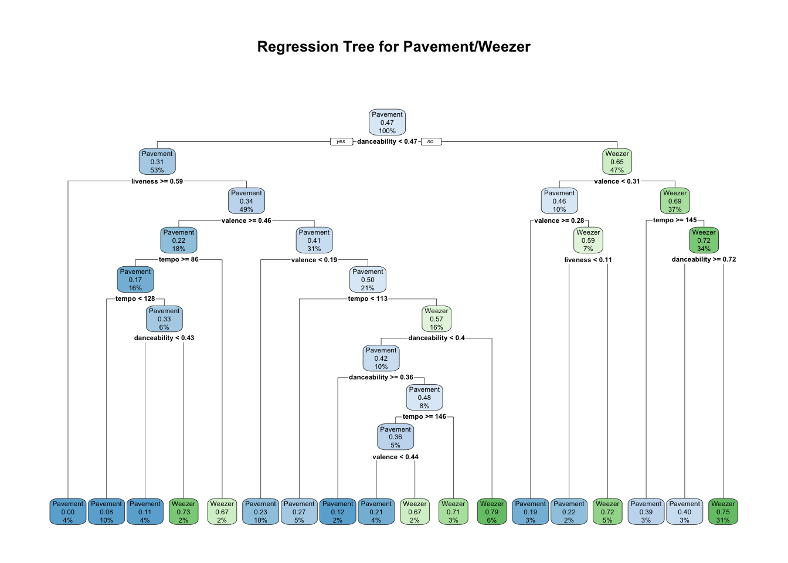
Christmas or Not?
christmas <- get_playlist_audio_features("", "5OP7itTh52BMfZS1DJrdlv")
christmas$christmas <- "yes"
not <- get_playlist_audio_features("", "6i2Qd6OpeRBAzxfscNXeWp")
not$christmas <- "no"
christmas_not <-rbind(christmas, not)
fit <- rpart(as.factor(christmas) ~ danceability + valence + tempo + liveness + tempo + mode, data=christmas_not)
# plot tree
rpart.plot(fit, uniform=TRUE,
main="Regression Tree for Christmas/Not")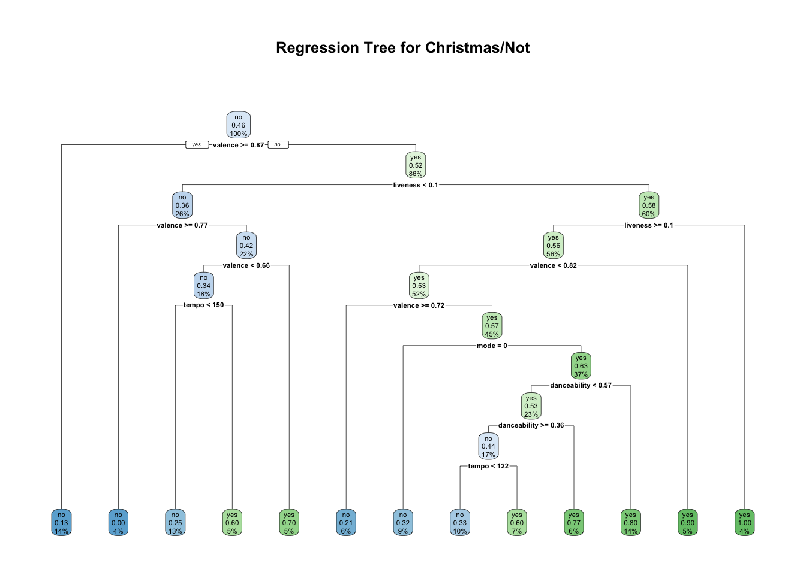
table(not$mode)
0 1
28 88